Garlic Jr.
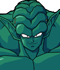Version: 1.0
Created by: Chrono_Strife
Release Date: July 13, 2008
This character's Programming and FX are open source(You can use the sprite bodies, just remove the head).
Contact: chronostrifeff7h@hotmail.com
Website: http://members.lycos.co.uk/cstrife/index.html
Contents:
::Character Information::::Updates and Fixes::
::Pallete Options::
::Command List::
::Credits and Shouts::
Character Information:
| 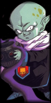 |
Garlic Jr, a demon king, seeks to rule the world. By taking Kami's throne he would reshape the world to serve him, ruling with an army of demons. Aside from being pure evil, ruthless, and totally insane; Garlic Jr has been granted immortality by the Eternal Dragon. After a failed attempt by Kami himself, Goku, Piccolo, Krillin, and Gohan defeated Garlic Jr by sealing him away in the Dead Zone, one of Garlic Jr's own attacks.
Years have past since Garlic Jr's defeat, and his power has grown due to the Makyo Star passing close to Earth. With his increased power he breaks free of the Dead Zone and immediately attempts to dethrone Kami again, he is interrupted by Piccolo, Gohan, and Krillin. Out of frustration Garlic Jr reopens the Dead Zone. When Gohan destroyed the Makyo Star, Garlic Jr fell into the Dead Zone once again, where he would be locked away for eternity. But now MUGEN has given Garlic Jr new powers again! And he plans to rule the world, and steal all the wibbles for himself! |
Updates and Fixes:
July 13, 2008: Garlic Jr 1.0 Release!-Everything I wanted in Garlic is done except Dead Zone is not finished and an addition to his Face Breaker was removed. All known bugs removed, except Team Mode Dead Zone issue. Next update may include a fixed Dead Zone, addition slam, and futher changes. AI added and may be a bit more powerful than I originally wanted, so it may be toned down in the future. Garlic may also be slowed down too.
Pallette Options:
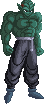 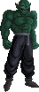 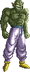 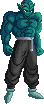 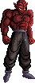 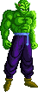Command List:
Basics:
Weak Punch:Medium Punch:
Strong Punch:
Weak Kick:
Medium Kick: Strong Kick: Any Punch Command:
Any Kick Command:
Taunt:
Throws and Grabs:
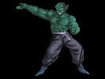Grab and Toss: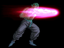Face Breaker:
Specials:
 Launcher:
Launcher: 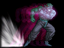Shoulder Bash:
 Makyo Meteor: ,
Makyo Meteor: , 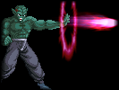Fireball Chain:
 Ground Pounder:
Ground Pounder: 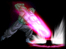Garlic Smash:
Supers(Level 1):
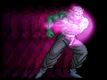Bash'n'Blast: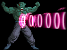Belly Blast:
Supers(Level 2):
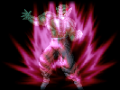Rush'n'Crush:Dead Zone:
::Dead Zone may only be performed when opponent's life is below 250.
Abilities:
Power Up:::Raise power and can push nearby enemies back.
Zanzoken:
::Can only be performed while running(consumes power).
Super Jump:
::Perform from the Crouch State.
Air Dashing:
::Perform while in the air.
Advance Guard:
::Can only be performed while guarding(consumes power)
Chains and Fighting Tips:
1. When using the "Fireball Chain" special attack, continue tapping any 'P' button to chain up to 4 fireballs and finish with a big energy beam.2. Use a weak Garlic Smash(a) followed by a strong Ground Pounder(c) for some extra damage.
3. Dead Zone may only be performed when opponent's life is below 250.
4. If an opponent has you in a melee combo while blocking, you can knock him/her away using Advance Guard.
5. Garlic Jr is powerful but has short combos, however you may be able to juggle an opponent with specials to keep the attacks flowing.
6. Dead Zone can be chained from any attack, but other supers and special can.
Credits and Shout Outs:
Akira Toriyama - Dragon Ball Z! Bandai - BuuYu Retsudan and Super Butouden. Atari - The Budokai games. SNK/NeoGeo - Some Sounds and effects. Capcom - MvC and MvSF effects. SquareSoft/Enix - The super effect. Type Moon/French-Bread - Melty Blood. Elecbyte - For MUGEN. Chuck Huber - The voice acting. SesMCM - For MCM. Chrono_Strife - Coding, Effects, Sounds, Ideas, excessive ganus, Sprites. Roken - Garlic Jr's Head and a sweet pallette. BT3 pics too and even Beta Testing! Neocide - Beta Testing, ideas, and rape! Pextin - Beta tester of Doom! TK - Dead Zone Ideas! Toad - For alot of the FX. ggslash - For a great deal of the FX. POTS - A few effects. Mattasaur - The original KOF2000 hitsparks. ZUN - Touhou which actually influenced 18 and in effect, Garlic Jr, or atleast fueled my motivation. Adam @ www.silver-dawn.net - Sexy buttons for the command list. Shunsuke Kikuchi - The great old school DBZ soundtrack, and your music used in this ReadMe. ZGTeam Forum RokCorp Forum Everyone else that I have forgotten. E-mail me, if I forgot you.